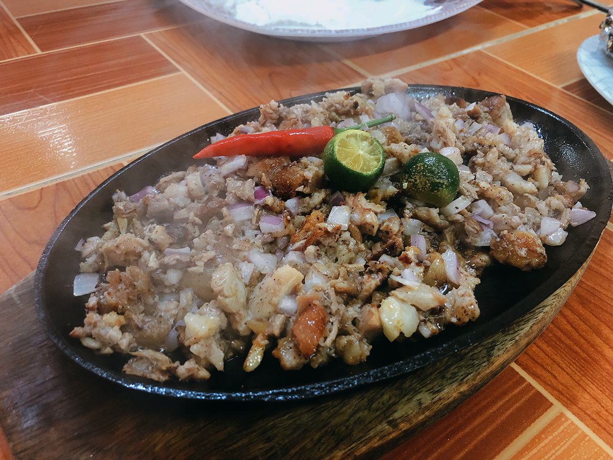

Lucia Cunanan of Angeles, widely known as "Aling Lucing," is credited with innovating sisig by grilling the pig's ears and cheeks. In 1974, her "Aling Lucing's" restaurant established Angeles as the "Sisig Capital of the Philippines," according to the Philippine Department of Tourism.
Sisig, a traditional Filipino delicacy from Pampanga, has become a public favorite throughout the Philippines. The meal is made out of sliced pork (usually from the head of a pig) that is boiled, grilled, fried with onions and chiles, and served on a sizzling platter. For added taste, some varieties of sisig include chicken or pork liver.
Of course, with all the sisighans in Pampanga, the ideal spot to try the delicacy is at the birthplace of the sisig. Aling Lucing Sisig has been serving the popular dish since the 1970s and is regarded as one of Pampanga's must-visit restaurants. We encourage paying a visit to discover for yourself why Aling Lucing was called "the Sisig Queen" during your next cuisine adventure.

Source: Travel South Tv's YouTube Channel
Location
Glaciano Valdez St. Agapito del Rosario, Angeles City, Pampanga Official FB page
Socials
@TRAVELPHOfficialTRAVELPH OfficialTRAVEL PH Official Page
 @TRAVELPHOfficial
@TRAVELPHOfficial